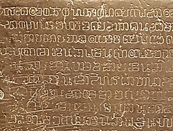

อักษรไทยและภูมิปัญญา

ในสมัยพ่อขุนรามคำแหงมหาราช มีการประดิษฐ์ ลายสือไทย ซึ่งเป็นพื้นฐานสำคัญของอักษรไทยในเวลาต่อมา และมีการพัฒนาภูมิปัญญาด้านต่าง ๆ

ในสมัยพ่อขุนรามคำแหงมหาราช มีการประดิษฐ์ ลายสือไทย ซึ่งเป็นพื้นฐานสำคัญของอักษรไทยในเวลาต่อมา และมีการพัฒนาภูมิปัญญาด้านต่าง ๆ